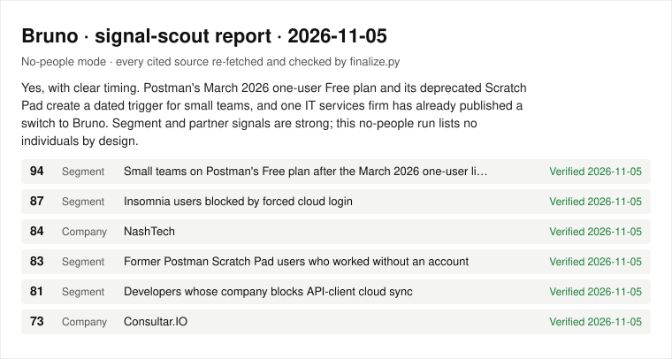

signal-scout · example output
A first-customer shortlist where every source was re-read
signal-scout is an agent skill: give it a product URL and it returns scored market segments, companies and (in private runs) people worth approaching. Before the report is written, finalize.py fetches every cited page and drops any prospect whose quoted evidence is not on it.
--no-people run: segments and companies only, no individuals named.
- Searches
- 8
- Pages read
- 10
- Prospects kept
- 6
- Verified
- 6 of 6

What this does and does not show
It is one run on one product. All six kept prospects had their quoted evidence on the cited page, which shows the pipeline works end to end; it is not a verification rate, and nobody has measured how often these shortlists turn into replies. The check is lexical: it confirms the words are on the page, not that the claim is true.
Check it yourself
Offline, from a clone (schema and score arithmetic, then the four fixture cases CI runs):
python3 skills/signal-scout/scripts/finalize.py examples/finder-report.json --validate-only python3 evals/pipeline/run.py -v
Live, re-fetching the six cited pages (results can change as pages change):
python3 skills/signal-scout/scripts/verify_sources.py examples/finder-report.json